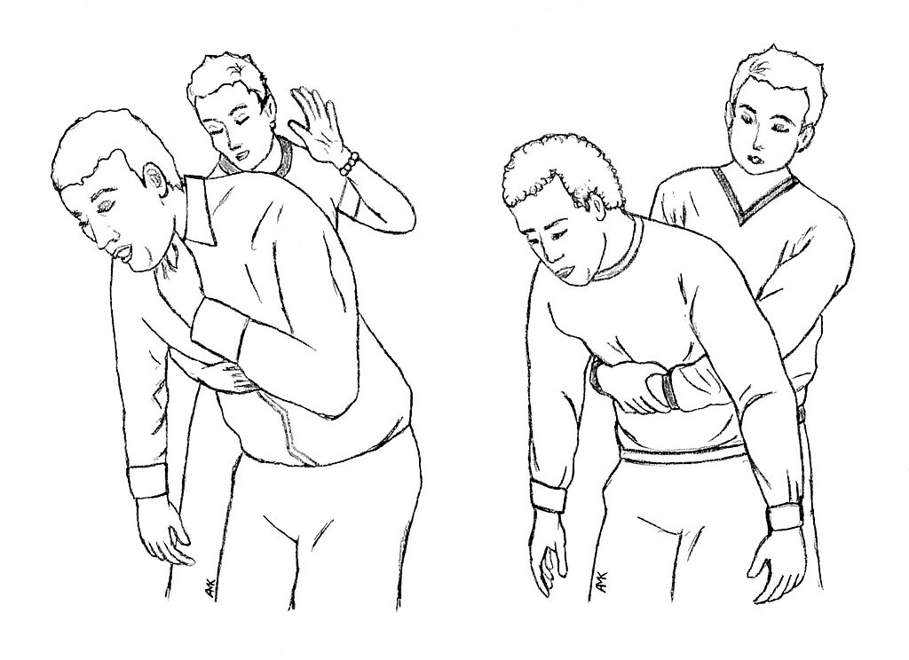

La victime s'étouffe après avoir ingurgité un corps étranger. Le maintien de cette liberté de passage de l'air et les gestes qui permettent une meilleure mécanique ventilatoire sont des actes fondamentaux en secourisme face à toutes les situations où il existe une menace d'obstruction : malaise, fausse route, troubles de la conscience etc.
ProcédureSi obstruction partielle : Faites asseoir la victime et encouragez-la à tousser. Si obstruction totale : 1 - Penchez la victime en avant et soutenez la au niveau du thorax. 2 - Placez-vous sur le côté, légèrement en arrière de la victime. 3 - Donnez 5 claques vigoureuses, avec le plat de la main, entre les deux omoplates. Si les claques sont inefficasses, réalisez la manoeuvre de Heimlich : 1 - Placez-vous derrière la victime et entourez la au niveau du thorax. 2 - Placez un poing au creux de son estomac puis l'autre main par dessus. 3 - Appuyez brièvement, très fort en ramenant les poings vers le haut 5 fois de suite.
